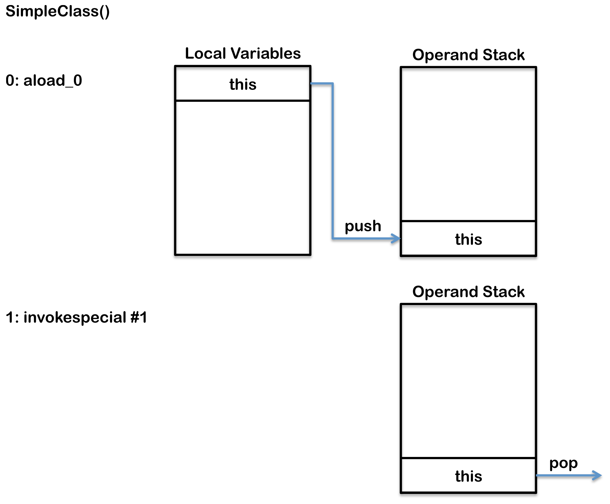

2013/11/24
This article explains the internal architecture of the Java Virtual Machine (JVM). The following diagram show the key internal components of a typical JVM that conforms to The Java Virtual Machine Specification Java SE 7 Edition.

The components shown on this diagram are each explained below in two sections. First section covers the components that are created for each thread and the second section covers the components that are created independently of threads.
Thread
A thread is a thread of execution in a program. The JVM allows an application to have multiple threads of execution running concurrently. In the Hotspot JVM there is a direct mapping between a Java Thread and a native operating system Thread. After preparing all of the state for a Java thread such as thread-local storage, allocation buffers, synchronization objects, stacks and the program counter, the native thread is created. The native thread is reclaimed once the Java thread terminates. The operating system is therefore responsible for scheduling all threads and dispatching them to any available CPU. Once the native thread has initialized it invokes the run() method in the Java thread. When the run() method returns, uncaught exceptions are handled, then the native thread confirms if the JVM needs to be terminated as a result of the thread terminating (i.e. is it the last non-deamon thread). When the thread terminates all resources for both the native and Java thread are released.
JVM System Threads
If you use jconsole or any debugger it is possible to see there are numerous threads running in the background. These background threads run in addition to the main thread, which is created as part of invoking public static void main(String[]), and any threads created by the main thread. The main background system threads in the Hotspot JVM are:
Per Thread
Each thread of execution has the following components:
Program Counter (PC)
Address of the current instruction (or opcode) unless it is native. If the current method is native then the PC is undefined. All CPUs have a PC, typically the PC is incremented after each instruction and therefore holds the address of the next instruction to be executed. The JVM uses the PC to keep track of where it is executing instructions, the PC will in fact be pointing at a memory address in the Method Area.
Stack
Each thread has its own stack that holds a frame for each method executing on that thread. The stack is a Last In First Out (LIFO) data structure, so the currently executing method is at the top of the stack. A new frame is created and added (pushed) to the top of stack for every method invocation. The frame is removed (popped) when the method returns normally or if an uncaught exception is thrown during the method invocation. The stack is not directly manipulated, except to push and pop frame objects, and therefore the frame objects may be allocated in the Heap and the memory does not need to be contiguous.
Native Stack
Not all JVMs support native methods, however, those that do typically create a per thread native method stack. If a JVM has been implemented using a C-linkage model for Java Native Invocation (JNI) then the native stack will be a C stack. In this case the order of arguments and return value will be identical in the native stack to typical C program. A native method can typically (depending on the JVM implementation) call back into the JVM and invoke a Java method. Such a native to Java invocation will occur on the stack (normal Java stack); the thread will leave the native stack and create a new frame on the stack (normal Java stack).
Stack Restrictions
A stack can be a dynamic or fixed size. If a thread requires a larger stack than allowed a StackOverflowError is thrown. If a thread requires a new frame and there isn’t enough memory to allocate it then an OutOfMemoryError is thrown.
Frame
A new frame is created and added (pushed) to the top of stack for every method invocation. The frame is removed (popped) when the method returns normally or if an uncaught exception is thrown during the method invocation. For more detail on exception handling see the section on Exception Tables below.
Each frame contains:
- Local variable array
- Return value
- Operand stack
- Reference to runtime constant pool for class of the current method
Local Variables Array
The array of local variables contains all the variables used during the execution of the method, including a reference to this, all method parameters and other locally defined variables. For class methods (i.e. static methods) the method parameters start from zero, however, for instance method the zero slot is reserved for this.
A local variable can be:
- boolean
- byte
- char
- long
- short
- int
- float
- double
- reference
- returnAddress
All types take a single slot in the local variable array except long and double which both take two consecutive slots because these types are double width (64-bit instead of 32-bit).
Operand Stack
The operand stack is used during the execution of byte code instructions in a similar way that general-purpose registers are used in a native CPU. Most JVM byte code spends its time manipulating the operand stack by pushing, popping, duplicating, swapping, or executing operations that produce or consume values. Therefore, instructions that move values between the array of local variables and the operand stack are very frequent in byte code. For example, a simple variable initialization results in two byte codes that interact with the operand stack.
int i;
Gets compiled to the following byte code:
0: iconst_0 // Push 0 to top of the operand stack 1: istore_1 // Pop value from top of operand stack and store as local variable 1
For more detail explaining interactions between the local variables array, operand stack and run time constant pool see the section on Class File Structure below.
Dynamic Linking
Each frame contains a reference to the runtime constant pool. The reference points to the constant pool for the class of the method being executed for that frame. This reference helps to support dynamic linking.
C/C++ code is typically compiled to an object file then multiple object files are linked together to product a usable artifact such as an executable or dll. During the linking phase symbolic references in each object file are replaced with an actual memory address relative to the final executable. In Java this linking phase is done dynamically at runtime.
When a Java class is compiled, all references to variables and methods are stored in the class's constant pool as a symbolic reference. A symbolic reference is a logical reference not a reference that actually points to a physical memory location. The JVM implementation can choose when to resolve symbolic references, this can happen when the class file is verified, after being loaded, called eager or static resolution, instead this can happen when the symbolic reference is used for the first time called lazy or late resolution. However the JVM has to behave as if the resolution occurred when each reference is first used and throw any resolution errors at this point. Binding is the process of the field, method or class identified by the symbolic reference being replaced by a direct reference, this only happens once because the symbolic reference is completely replaced. If the symbolic reference refers to a class that has not yet been resolved then this class will be loaded. Each direct reference is stored as an offset against the storage structure associated with the runtime location of the variable or method.
Shared Between Threads
Heap
The Heap is used to allocate class instances and arrays at runtime. Arrays and objects can never be stored on the stack because a frame is not designed to change in size after it has been created. The frame only stores references that point to objects or arrays on the heap. Unlike primitive variables and references in the local variable array (in each frame) objects are always stored on the heap so they are not removed when a method ends. Instead objects are only removed by the garbage collector.
To support garbage collection the heap is divided into three sections:
- Young Generation
- Often split between Eden and Survivor
- Old Generation (also called Tenured Generation)
- Permanent Generation
Memory Management
Objects and Arrays are never explicitly de-allocated instead the garbage collector automatically reclaims them.
Typically this works as follows:
- New objects and arrays are created into the young generation
- Minor garbage collection will operate in the young generation. Objects, that are still alive, will be moved from the eden space to the survivor space.
- Major garbage collection, which typically causes the application threads to pause, will move objects between generations. Objects, that are still alive, will be moved from the young generation to the old (tenured) generation.
- The permanent generation is collected every time the old generation is collected. They are both collected when either becomes full.
Non-Heap Memory
Objects that are logically considered as part of the JVM mechanics are not created on the Heap.
The non-heap memory includes:
- Permanent Generation that contains
- the method area
- interned strings
- Code Cache used for compilation and storage of methods that have been compiled to native code by the JIT compiler
Just In Time (JIT) Compilation
Java byte code is interpreted however this is not as fast as directly executing native code on the JVM’s host CPU. To improve performance the Oracle Hotspot VM looks for “hot” areas of byte code that are executed regularly and compiles these to native code. The native code is then stored in the code cache in non-heap memory. In this way the Hotspot VM tries to choose the most appropriate way to trade-off the extra time it takes to compile code verses the extra time it take to execute interpreted code.
Method Area
The method area stores per-class information such as:
- Classloader Reference
- Run Time Constant Pool
- Numeric constants
- Field references
- Method References
- Attributes
- Field data
- Per field
- Name
- Type
- Modifiers
- Attributes
- Per field
- Method data
- Per method
- Name
- Return Type
- Parameter Types (in order)
- Modifiers
- Attributes
- Per method
- Method code
- Per method
- Bytecodes
- Operand stack size
- Local variable size
- Local variable table
- Exception table
- Per exception handler
- Start point
- End point
- PC offset for handler code
- Constant pool index for exception class being caught
- Per exception handler
- Per method
All threads share the same method area, so access to the method area data and the process of dynamic linking must be thread safe. If two threads attempt to access a field or method on a class that has not yet been loaded it must only be loaded once and both threads must not continue execution until it has been loaded.
Class File Structure
A compiled class file consists of the following structure:
ClassFile {
u4 magic;
u2 minor_version;
u2 major_version;
u2 constant_pool_count;
cp_info contant_pool[constant_pool_count – 1];
u2 access_flags;
u2 this_class;
u2 super_class;
u2 interfaces_count;
u2 interfaces[interfaces_count];
u2 fields_count;
field_info fields[fields_count];
u2 methods_count;
method_info methods[methods_count];
u2 attributes_count;
attribute_info attributes[attributes_count];
}
It is possible to view the byte code in a compiled Java class by using the javap command.
If you compile the following simple class:
package org.jvminternals; public class SimpleClass { public void sayHello() { System.out.println("Hello"); } }
Then you get the following output if you run:
javap -v -p -s -sysinfo -constants classes/org/jvminternals/SimpleClass.class
public class org.jvminternals.SimpleClass SourceFile: "SimpleClass.java" minor version: 0 major version: 51 flags: ACC_PUBLIC, ACC_SUPER Constant pool: #1 = Methodref #6.#17 // java/lang/Object."<init>":()V #2 = Fieldref #18.#19 // java/lang/System.out:Ljava/io/PrintStream; #3 = String #20 // "Hello" #4 = Methodref #21.#22 // java/io/PrintStream.println:(Ljava/lang/String;)V #5 = Class #23 // org/jvminternals/SimpleClass #6 = Class #24 // java/lang/Object #7 = Utf8 <init> #8 = Utf8 ()V #9 = Utf8 Code #10 = Utf8 LineNumberTable #11 = Utf8 LocalVariableTable #12 = Utf8 this #13 = Utf8 Lorg/jvminternals/SimpleClass; #14 = Utf8 sayHello #15 = Utf8 SourceFile #16 = Utf8 SimpleClass.java #17 = NameAndType #7:#8 // "<init>":()V #18 = Class #25 // java/lang/System #19 = NameAndType #26:#27 // out:Ljava/io/PrintStream; #20 = Utf8 Hello #21 = Class #28 // java/io/PrintStream #22 = NameAndType #29:#30 // println:(Ljava/lang/String;)V #23 = Utf8 org/jvminternals/SimpleClass #24 = Utf8 java/lang/Object #25 = Utf8 java/lang/System #26 = Utf8 out #27 = Utf8 Ljava/io/PrintStream; #28 = Utf8 java/io/PrintStream #29 = Utf8 println #30 = Utf8 (Ljava/lang/String;)V { public org.jvminternals.SimpleClass(); Signature: ()V flags: ACC_PUBLIC Code: stack=1, locals=1, args_size=1 0: aload_0 1: invokespecial #1 // Method java/lang/Object."<init>":()V 4: return LineNumberTable: line 3: 0 LocalVariableTable: Start Length Slot Name Signature 0 5 0 this Lorg/jvminternals/SimpleClass; public void sayHello(); Signature: ()V flags: ACC_PUBLIC Code: stack=2, locals=1, args_size=1 0: getstatic #2 // Field java/lang/System.out:Ljava/io/PrintStream; 3: ldc #3 // String "Hello" 5: invokevirtual #4 // Method java/io/PrintStream.println:(Ljava/lang/String;)V 8: return LineNumberTable: line 6: 0 line 7: 8 LocalVariableTable: Start Length Slot Name Signature 0 9 0 this Lorg/jvminternals/SimpleClass; }
This class file shows three main sections the constant pool, the constructor and the sayHello method.
- Constant Pool – this provides the same information that a symbol table typically provides and is described in more detail below.
- Methods – each containing four areas:
- signature and access flags
- byte code
- LineNumberTable – this provides information to a debugger to indicate which line corresponds to which byte code instruction, for example line 6 in the Java code corresponds to byte code 0 in the sayHello method and line 7 corresponds to byte code 8.
- LocalVariableTable – this lists all local variables provided in the frame, in both examples the only local variable is this.
The following byte code operands are used in this class file
As in any typical byte code the majority of the operands interact with the local variables, operand stack and run time constant pool as follows.
The constructor has two instructions first this is pushed onto the operand stack, next the constructor for the super class is invoked which consumes the value off this and therefore pops it off the operand stack.
{kind=link}
The sayHello() method is more complex as it has to resolve symbolic references to actual references using the run time constant pool, as explained in more detail above. The first operand getstatic is used to push a reference to the static field out of the System class on to the operand stack. The next operand ldc pushes the string "Hello" onto the operand stack. The final operand invokevirtual invokes the println method of System.out which pops "Hello" off the operand stack as an argument and creates a new frame for the current thread.
{kind=link}
Classloader
The JVM starts up by loading an initial class using the bootstrap classloader. The class is then linked and initialized before public static void main(String[]) is invoked. The execution of this method will in turn drive the loading, linking and initialization of additional classes and interfaces as required.
Loading is the process of finding the class file that represents the class or interface type with a particular name and reading it into a byte array. Next the bytes are parsed to confirm they represent a Class object and have the correct major and minor versions. Any class or interface named as a direct superclass is also loaded. Once this is completed a class or interface object is created from the binary representation.
Linking is the process of taking a class or interface verifying and preparing the type and its direct superclass and superinterfaces. Linking consists of three steps verifying, preparing and optionally resolving.
Verifying is the process of confirming the class or interface representation is structurally correct and obeys the semantic requirements of the Java programming language and JVM, for example the following checks are performed:
- consistent and correctly formatted symbol table
- final methods / classes not overridden
- methods respect access control keywords
- methods have correct number and type of parameters
- bytecode doesn't manipulate stack incorrectly
- variables are initialized before being read
- variables are a value of the correct type
Performing these checks during the verifying stages means these checks do not need to be performed at runtime. Verification during linking slows down class loading however it avoids the need to perform these checks multiple when executing the bytecode.
Preparing involves allocation of memory for static storage and any data structures used by the JVM such as method tables. Static fields are created and initialized to their default values, however, no initializers or code is executed at this stage as that happens as part of initialization.
Resolving is an optional stage which involves checking symbolic references by loading the referenced classes or interfaces and checking the references are correct. If this does not take place at this point the resolution of symbolic references can be deferred until just prior to their use by a byte code instruction.
Initialization of a class or interface consists of executing the class or interface initialization method <clinit>

In the JVM there are multiple classloaders with different roles. Each classloader delegates to its parent classloader (that loaded it) except the bootstrap classloader which is the top classloader.
Bootstrap Classloader is usually implemented as native code because it is instantiated very early as the JVM is loaded. The bootstrap classloader is responsible for loading the basic Java APIs, including for example rt.jar. It only loads classes found on the boot classpath which have a higher level of trust; as a result it skips much of the validation that gets done for normal classes.
Extension Classloader loads classes from standard Java extension APIs such as security extension functions.
System Classloader is the default application classloader, which loads application classes from the classpath.
User Defined Classloaders can alternatively be used to load application classes. A user defined classloader is used for a number of special reasons including run time reloading of classes or separation between different groups of loaded classes typically required by web servers such as Tomcat.

Faster Class Loading
A feature called Class Data Sharing (CDS) was introduce in HotSpot JMV from version 5.0. During the installation process of the JVM the installer loads a set of key JVM classes, such as rt.jar, into a memory-mapped shared archive. CDS reduces the time it takes to load these classes improving JVM start-up speed and allows these classes to be shared between different instances of the JVM reducing the memory footprint.
Where Is The Method Area
The Java Virtual Machine Specification Java SE 7 Edition clearly states: “Although the method area is logically part of the heap, simple implementations may choose not to either garbage collect or compact it.” In contradiction to this jconsole for the Oracle JVM shows the method area (and code cache) as being non-heap. The OpenJDK code shows that the CodeCache is a separate field of the VM to the ObjectHeap.
Classloader Reference
All classes that are loaded contain a reference to the classloader that loaded them. In turn the classloader also contains a reference to all classes that it has loaded.
Run Time Constant Pool
The JVM maintains a per-type constant pool, a run time data structure that is similar to a symbol table although it contains more data. Byte codes in Java require data, often this data is too large to store directly in the byte codes, instead it is stored in the constant pool and the byte code contains a reference to the constant pool. The run time constant pool is used in dynamic linking as described above
Several types of data is stored in the constant pool including
- numeric literals
- string literals
- class references
- field references
- method references
For example the following code:
Object foo = new Object();
Would be written in byte code as follows:
0: new #2 // Class java/lang/Object 1: dup 2: invokespecial #3 // Method java/ lang/Object "<init>"( ) V
The new opcode (operand code) is followed by the #2 operand. This operand is an index into the constant pool and therefore is referencing the second entry in the constant pool. The second entry is a class reference, this entry in turn references another entry in the constant pool containing the name of the class as a constant UTF8 string with the value // Class java/lang/Object. This symbolic link can then be used to lookup the class for java.lang.Object. The new opcode creates a class instance and initializes its variables. A reference to the new class instance is then added to the operand stack. The dup opcode then creates an extra copy of the top reference on the operand stack and adds this to the top of the operand stack. Finally an instance initialization method is called on line 2 by invokespecial. This operand also contains a reference to the constant pool. The initialization method consumes (pops) the top reference off the operand pool as an argument to the method. At the end there is one reference to the new object that has been both created and initialized.
If you compile the following simple class:
package org.jvminternals; public class SimpleClass { public void sayHello() { System.out.println("Hello"); } }
The constant pool in the generated class file would look like:
Constant pool: #1 = Methodref #6.#17 // java/lang/Object."<init>":()V #2 = Fieldref #18.#19 // java/lang/System.out:Ljava/io/PrintStream; #3 = String #20 // "Hello" #4 = Methodref #21.#22 // java/io/PrintStream.println:(Ljava/lang/String;)V #5 = Class #23 // org/jvminternals/SimpleClass #6 = Class #24 // java/lang/Object #7 = Utf8 <init> #8 = Utf8 ()V #9 = Utf8 Code #10 = Utf8 LineNumberTable #11 = Utf8 LocalVariableTable #12 = Utf8 this #13 = Utf8 Lorg/jvminternals/SimpleClass; #14 = Utf8 sayHello #15 = Utf8 SourceFile #16 = Utf8 SimpleClass.java #17 = NameAndType #7:#8 // "<init>":()V #18 = Class #25 // java/lang/System #19 = NameAndType #26:#27 // out:Ljava/io/PrintStream; #20 = Utf8 Hello #21 = Class #28 // java/io/PrintStream #22 = NameAndType #29:#30 // println:(Ljava/lang/String;)V #23 = Utf8 org/jvminternals/SimpleClass #24 = Utf8 java/lang/Object #25 = Utf8 java/lang/System #26 = Utf8 out #27 = Utf8 Ljava/io/PrintStream; #28 = Utf8 java/io/PrintStream #29 = Utf8 println #30 = Utf8 (Ljava/lang/String;)V
The constant pool contains the following types:
Exception Table
The exception table stores per-exception handler information such as:
- Start point
- End point
- PC offset for handler code
- Constant pool index for exception class being caught
If a method has defined a try-catch or a try-finally exception handler then an Exception Table will be created. This contains information for each exception handler or finally block including the range over which the handler applies, what type of exception is being handled and where the handler code is.
When an exception is thrown the JVM looks for a matching handler in the current method, if none is found the method ends abruptly popping the current stack frame and the exception is re-thrown in the calling method (the new current frame). If no exception handler is found before all frames have been popped then the thread is terminated. This can also cause the JVM itself to terminate if the exception is thrown in the last non-daemon thread, for example if the thread is the main thread.
Finally exception handlers match all types of exceptions and so always execute whenever an exception is thrown. In the case when no exception is thrown a finally block is still executed at the end of a method, this is achieved by jumping to the finally handler code immediately before the return statement is executed.
Symbol Table
In addition to per-type run-time constant pools the Hotspot JVM has a symbol table held in the permanent generation. The symbol table is a Hashtable mapping symbol pointers to symbols (i.e. Hashtable<Symbol*, Symbol>) and includes a pointer to all symbols including those held in run time constant pools in each class.
Reference counting is used to control when a symbol is removed from the symbol table. For example when a class is unloaded the reference count of all symbols held in its run time constant pool are decremented. When the reference count of a symbol in the the symbol table goes to zero then the symbol table knows that symbol is not being referenced anymore and the symbol is unloaded from the symbol table. For both the symbol table and the string table (see below) all entries are held in a canonicalized form to improve efficiency and ensure each entry only appears once.
Interned Strings (String Table)
The Java Language Specification requires that identical string literals, that contain the same sequence of Unicode code points, must refer to the same instance of String. In addition if String.intern() is called on an instance of String a reference must be returned that would be identical to the reference return if the string was a literal. The following therefore holds true:
("j" + "v" + "m").intern() == "jvm"
In the Hotspot JVM interned string are held in the string table, which is a Hashtable mapping object pointers to symbols (i.e. Hashtable<oop, Symbol>), and is held in the permanent generation. For both the symbol table (see above) and the string table all entries are held in a canonicalized form to improve efficiency and ensure each entry only appears once.
String literals are automatically interned by the compiler and added into the symbol table when the class is loaded. In addition instances of the String class can be explicitly interned by calling String.intern(). When String.intern() is called, if the symbol table already contains the string then a reference to this is returned, if not the string is added to the string table and its reference is returned.